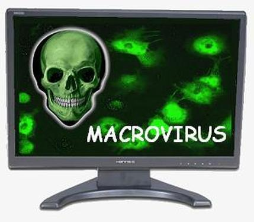

A computer virus is a type of computer program that, when executed, replicates itself by modifying other computer programs and inserting its own code. When this replication succeeds, the affected areas are then said to be "infected" with a computer virus. Virus writers use social engineering deceptions and exploit detailed knowledge of security vulnerabilities to initially infect systems and to spread the virus. The vast majority of viruses target systems running Microsoft Windows, employing a variety of mechanisms to infect new hosts, and often using complex anti-detection/stealth strategies to evade antivirus software. Motives for creating viruses can include seeking profit (e.g., with ransomware), desire to send a political message, personal amusement, to demonstrate that a vulnerability exists in software, for sabotage and denial of service, or simply because they wish to explore cybersecurity issues, artificial life and evolutionary algorithms.
Read MoreFirst examples
The Creeper virus was first detected on ARPANET, the forerunner of the Internet, in the early 1970s. Creeper was an experimental self-replicating program written by Bob Thomas at BBN Technologies in 1971. Creeper used the ARPANET to infect DEC PDP-10 computers running the TENEX operating system. Creeper gained access via the ARPANET and copied itself to the remote system where the message, "I'm the creeper, catch me if you can!" was displayed. The Reaper program was created to delete Creeper. In 1982, a program called "Elk Cloner" was the first personal computer virus to appear "in the wild"—that is, outside the single computer or [computer] lab where it was created. Written in 1981 by Richard Skrenta, a ninth grader at Mount Lebanon High School near Pittsburgh, it attached itself to the Apple DOS 3.3 operating system and spread via floppy disk. On its 50th use the Elk Cloner virus would be activated, infecting the personal computer and displaying a short poem beginning "Elk Cloner: The program with a personality." In 1984 Fred Cohen from the University of Southern California wrote his paper "Computer Viruses – Theory and Experiments". It was the first paper to explicitly call a self-reproducing program a "virus", a term introduced by Cohen's mentor Leonard Adleman. In 1987, Fred Cohen published a demonstration that there is no algorithm that can perfectly detect all possible viruses. Fred Cohen's theoretical compression virus was an example of a virus which was not malicious software (malware), but was putatively benevolent (well-intentioned). However, antivirus professionals do not accept the concept of "benevolent viruses", as any desired function can be implemented without involving a virus (automatic compression, for instance, is available under the Windows at the choice of the user). Any virus will by definition make unauthorised changes to a computer, which is undesirable even if no damage is done or intended. On page one of Dr Solomon's Virus Encyclopaedia, the undesirability of viruses, even those that do nothing but reproduce, is thoroughly explained. An article that describes "useful virus functionalities" was published by J. B. Gunn under the title "Use of virus functions to provide a virtual APL interpreter under user control" in 1984. The first IBM PC virus in the "wild" was a boot sector virus dubbed (c)Brain, created in 1986 by Amjad Farooq Alvi and Basit Farooq Alvi in Lahore, Pakistan, reportedly to deter unauthorized copying of the software they had written. The first virus to specifically target Microsoft Windows, WinVir was discovered in April 1992, two years after the release of Windows 3.0. The virus did not contain any Windows API calls, instead relying on DOS interrupts. A few years later, in February 1996, Australian hackers from the virus-writing crew VLAD created the Bizatch virus (also known as "Boza" virus), which was the first known virus to target Windows 95. In late 1997 the encrypted, memory-resident stealth virus Win32.Cabanas was released—the first known virus that targeted Windows NT (it was also able to infect Windows 3.0 and Windows 9x hosts). Even home computers were affected by viruses. The first one to appear on the Commodore Amiga was a boot sector virus called SCA virus, which was detected in November 1987.
Read LessHistory of viruses and worms
Before Internet access became widespread, viruses spread on personal computers by infecting executable programs or boot sectors of floppy disks. By inserting a copy of itself into the machine code instructions in these programs or boot sectors, a virus causes itself to be run whenever the program is run or the disk is booted. Early computer viruses were written for the Apple II and Macintosh, but they became more widespread with the dominance of the IBM PC and MS-DOS system. The first IBM PC virus in the "wild" was a boot sector virus dubbed (c)Brain, created in 1986 by the Farooq Alvi brothers in Pakistan. Executable-infecting viruses are dependent on users exchanging software or boot-able floppies and thumb drives so they spread rapidly in computer hobbyist circles. The first worms, network-borne infectious programs, originated not on personal computers, but on multitasking Unix systems. The first well-known worm was the Internet Worm of 1988, which infected SunOS and VAX BSD systems. Unlike a virus, this worm did not insert itself into other programs. Instead, it exploited security holes (vulnerabilities) in network server programs and started itself running as a separate process. This same behavior is used by today's worms as well. With the rise of the Microsoft Windows platform in the 1990s, and the flexible macros of its applications, it became possible to write infectious code in the macro language of Microsoft Word and similar programs. These macro viruses infect documents and templates rather than applications (executables), but rely on the fact that macros in a Word document are a form of executable code.Infection targets and replication techniques
Computer viruses infect a variety of different subsystems on their host computers and software. One manner of classifying viruses is to analyze whether they reside in binary executables (such as .EXE or .COM files), data files (such as Microsoft Word documents or PDF files), or in the boot sector of the host's hard drive (or some combination of all of these).
Resident vs. non-resident viruses
A memory-resident virus (or simply "resident virus") installs itself as part of the operating system when executed, after which it remains in RAM from the time the computer is booted up to when it is shut down. Resident viruses overwrite interrupt handling code or other functions, and when the operating system attempts to access the target file or disk sector, the virus code intercepts the request and redirects the control flow to the replication module, infecting the target. In contrast, a non-memory-resident virus (or "non-resident virus"), when executed, scans the disk for targets, infects them, and then exits (i.e. it does not remain in memory after it is done executing).Macro viruses
 Many common applications, such as Microsoft Outlook and Microsoft Word, allow macro programs to be embedded in documents or emails, so that the programs may be run automatically when the document is opened. A macro virus (or "document virus") is a virus that is written in a macro language, and embedded into these documents so that when users open the file, the virus code is executed, and can infect the user's computer. This is one of the reasons that it is dangerous to open unexpected or suspicious attachments in e-mails. While not opening attachments in e-mails from unknown persons or organizations can help to reduce the likelihood of contracting a virus, in some cases, the virus is designed so that the e-mail appears to be from a reputable organization (e.g., a major bank or credit card company).Boot sector viruses
Boot sector viruses specifically target the boot sector and/or the Master Boot Record(MBR) of the host's hard disk drive, solid-state drive, or removable storage media (flash drives, floppy disks, etc.).Email virus
Email viruses are viruses that intentionally, rather than accidentally, uses the email system to spread. While virus infected files may be accidentally sent as email attachments, email viruses are aware of email system functions. They generally target a specific type of email system (Microsoft Outlook is the most commonly used), harvest email addresses from various sources, and may append copies of themselves to all email sent, or may generate email messages containing copies of themselves as attachments.EXAMPLES OF VIRUSES
Viruses and the Internet
Before computer networks became widespread, most viruses spread on removable media, particularly floppy disks. In the early days of the personal computer, many users regularly exchanged information and programs on floppies. Some viruses spread by infecting programs stored on these disks, while others installed themselves into the disk boot sector, ensuring that they would be run when the user booted the computer from the disk, usually inadvertently. Personal computers of the era would attempt to boot first from a floppy if one had been left in the drive. Until floppy disks fell out of use, this was the most successful infection strategy and boot sector viruses were the most common in the "wild" for many years. Traditional computer viruses emerged in the 1980s, driven by the spread of personal computers and the resultant increase in bulletin board system (BBS), modem use, and software sharing. Bulletin board–driven software sharing contributed directly to the spread of Trojan horse programs, and viruses were written to infect popularly traded software. Shareware and bootleg software were equally common vectors for viruses on BBSs.Viruses can increase their chances of spreading to other computers by infecting files on a network file system or a file system that is accessed by other computers. Macro viruses have become common since the mid-1990s. Most of these viruses are written in the scripting languages for Microsoft programs such as Microsoft Word and Microsoft Excel and spread throughout Microsoft Office by infecting documents and spreadsheets. Since Word and Excel were also available for Mac OS, most could also spread to Macintosh computers. Although most of these viruses did not have the ability to send infected email messages, those viruses which did take advantage of the Microsoft Outlook Component Object Model (COM) interface. Some old versions of Microsoft Word allow macros to replicate themselves with additional blank lines. If two macro viruses simultaneously infect a document, the combination of the two, if also self-replicating, can appear as a "mating" of the two and would likely be detected as a virus unique from the "parents". A virus may also send a web address link as an instant message to all the contacts (e.g., friends and colleagues' e-mail addresses) stored on an infected machine. If the recipient, thinking the link is from a friend (a trusted source) follows the link to the website, the virus hosted at the site may be able to infect this new computer and continue propagating. Viruses that spread using cross-site scripting were first reported in 2002, and were academically demonstrated in 2005. There have been multiple instances of the cross-site scripting viruses in the "wild", exploiting websites such as MySpace (with the Samy worm) and Yahoo!.Top Antiviruses
| 1. Bitdefender Antivirus Plus | Bitdefender Antivirus Plus is easy to get up and running with a simple installation process. (However, be aware that creating an online account,
including an email address is required prior to the initial download and install.) Once installed, the high ease-of-use continues - Bitdefender makes it
really easy to protect your PC
and keep you informed as to what threats are attacking you and when they're vanquished.
 |
| 2. Norton AntiVirus Plus | Norton AntiVirus Plus offers quite a few customization options to control the settings. We also like the URL blocker that can protect
from even acquiring the malware by protecting user by blocking visits to known malicious websites. The antivirus program is ever vigilant,
and runs continuously, with scanning also available on demand. |
| 3. F-Secure Antivirus SAFE | Here is F-Secure Antivirus SAFE’s winning formula: start with strong antivirus software, and then include even more features to fully
protect a user’s system. These tools include banking protection for the safest online shopping, and safety tools that are family centered.
Another useful feature looking beyond your Windows computer is a locator for the loss of your Android or iOS mobile device, Additionally,
if the device can’t be found, there is the option to remotely lock or delete it which at least keeps the data safe. |
| 4. Kaspersky Anti-Virus | Rather than focusing on too many peripheral features, Kapersky Anti-Virus hones in on the basics of malware prevention and detection,
and does them well indeed. Features include blocking of malicious URL’s via web filtering, antivirus scanning for threat removal and detection,
and smart monitoring technology to find malware before it brings down your system.  |
| 5. Trend Micro Antivirus+ Security | Trend Micro Antivirus+ Security has a strong reputation for effective antivirus prevention, with expertise in spam and ransomware.
It is also noted to be easy to use, and the major antivirus labs give it high marks in their testing suites. |